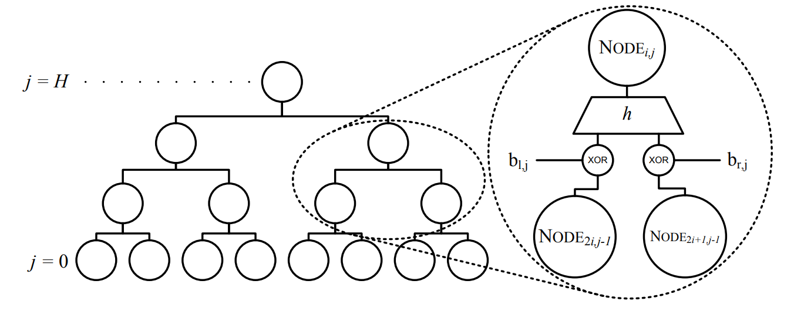
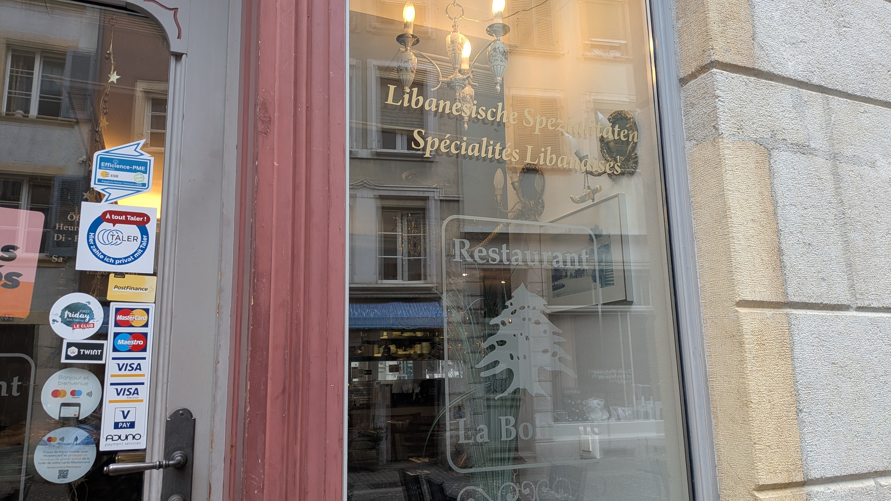

Digital payments with
Özgür Kesim ― Cedarcrypt 2026
With Elisa Pioldi, TU Eindhoven
Why Taler?
Traceability
Profiling
Sensitive data exposure


Is it so "easy"...?
Frauds
(De)regulation
Black-mailing
Money laundering
We live in a real world
...and real world has rules
Taler's goals

Taler's goals

Customer's anonymity

Identified merchants (easily taxable)

Anti-money laundering
Asymmetric privacy
Customer
Asymmetric privacy

Merchant
Taler's core principles
- Be Free/Libre Software
- Protect the privacy of buyers
- Be Auditable
- Prevent payment fraud
- Collect the minimum information
- Be usable
- Be efficient
- Fault-tolerant design
- Foster competition
In good tradition
https://web.cs.ucdavis.edu/~rogaway/papers/moral-fn.pdfHow does Taler “electronic cash” work?
Cryptographic building blocks
Blind Signatures (e-cash)
Blind Signatures (Taler)
Coins
Cryptographic primitives
Signatures
\[ \begin{align*} (s, p) & \leftarrow \mathsf{Sig.Keygen}(1^\lambda) \\ \sigma & \leftarrow \mathsf{Sig.Sig}(s, m) \\ b & \leftarrow \mathsf{Sig.Verify}(p, m, \sigma) \\ \end{align*} \]Blind Signatures
$$ \begin{align*} (\mathsf{sk}, \mathsf{pk}) & \leftarrow \mathsf{BlindSig.Keygen}(1^\lambda) \\ \bar{\sigma} & \leftarrow \mathsf{BlindSig.Sig}(\bar{m}, \mathsf{sk}) \\ b & \leftarrow \mathsf{BlindSig.Verify}(\mathsf{pk}, m, \sigma) \\ \bar{m} & \leftarrow \mathsf{BlindSig.Blind} (m, \mathsf{pk}, r) \\ \sigma & \leftarrow \mathsf{BlindSig.Unblind}(\bar{\sigma}, \bar{m}, \mathsf{pk}, r) \\ \end{align*} $$DH Key Exchange
$$ \begin{align*} (s, p) & \leftarrow \mathsf{DH.Keygen}(1^\lambda) \\ t & \leftarrow \mathsf{DH.KEX}(s, p') \\ & \quad = \mathsf{DH.KEX}(s', p) \end{align*} $$Ed25519
RSA-NN, Clause-Schnorr
X25519
(Hash: SHA256, SHA512)
RSA Signature
\[
\begin{array}{c c c}
\mathsf{Verifyer} & & \mathsf{Signer} \\[2pt]
\hline\\[-8pt]
\text{Has public key } (N,e) & & \text{Has private key } d\\[2pt]
& & \text{with } x^{ed} = x \bmod{N} \\[1pt]
& & N = p*q \text{ with } p,q \text{ prime} \\[1pt]
\hline\\[-8pt]
& & \sigma = H(m)^{\,d} \bmod N \\
& \xleftarrow{\;\;\sigma,\, m\;\;} & \\
\sigma^{e} \stackrel{?}{\equiv} H(m) \pmod{N}
\end{array} \\
\]
RSA Blind Signature
\[
\begin{array}{c c c}
\mathsf{Requester} & & \mathsf{Signer} \\[2pt]
\hline \\[-8pt]
\text{Has public key } (N,e) & & \text{Has private key } d\\[2pt]
& & \text{with } x^{ed} = x \!\pmod{N} \\[2pt]
\hline \\[-8pt]
r \stackrel{\$}{\leftarrow} \mathbb{Z}_N^{*} & & \\[2pt]
\bar{m} = H(m)\cdot r^{e} \bmod N & & \\
& \xrightarrow{\;\;\bar{m}\;\;} & \\
& & \bar{\sigma} = \bar{m}^{\,d} \bmod N \\
& \xleftarrow{\;\;\bar{\sigma}\;\;} & \\
\sigma = \bar{s}\cdot r^{-1} \, \bmod N & & \\
\sigma^{e} \stackrel{?}{\equiv} H(m) \, \bmod{N}
\end{array} \\
\]
Clause Blind Schnorr Signature
\[
\begin{array}{r c l}
\mathsf{Requester} & \scriptstyle P \,=\, xG,\;\; j \,\in\, \{0,1\} & \mathsf{Signer} \\[2pt]
\hline \\[-8pt]
& & r_0, r_1 \stackrel{\$}{\leftarrow} \mathbb{Z}_p \\
& & (R_0,\, R_1) = (r_0 G, r_1 G) \\[4pt]
& \xleftarrow{\;\;(R_0,\, R_1)\;\;} & \\[4pt]
\alpha_j, \beta_j \stackrel{\$}{\leftarrow} \mathbb{Z}_p & & \\
R'_j = R_j + \alpha_j G + \beta_j P & & \\
c'_j = H(R'_j \,\Vert\, m) & & \\
c_j = c'_j + \beta_j & & \\[4pt]
& \xrightarrow{\;\;(c_0,\, c_1)\;\;} & \\[4pt]
& & b \stackrel{\$}{\leftarrow} \{0,1\} \\
& & s = r_b + c_b\, x \\[4pt]
& \xleftarrow{\;\;(b,\, s)\;\;} & \\[4pt]
s' = s + \alpha_b & & \\
\sigma = (R'_b,\, s') & & \\[4pt]
s' G \stackrel{?}{=} R'_b + c'_b P & \\
\end{array}
\]
Payment and Change
Payment and Change
Payment and Change
Change requirements
Anonymity
Spent coins and change must be unrelated
Anti-money laundering
Change ownership cannot be transferred
Money-laundering in Taler
?
Money-laundering in Taler
?
Fixing
Money-laundering in Taler
Change requirements (part 2)
Anonymity
No one (except coin's owner) can correlate spent coins and change
Customer's responsibility
Anti-money laundering
An owner can always re-obtain change from their coins
Exchange's responsibility
How?
Refresh protocol
Refresh protocol
Refresh protocol
Cut-and-choose
Refresh Derive
Refresh Derive
With cut-and-choose the Exchange makes sure that planchets are generated in this exact way
With an open commitment the Customer reveals
to the Exchange
Re-obtaining a refreshed coin
Post-quantum refresh
What's the current problem?
Refresh protocol exploits ability of Ed25519 keys to do Curve25519 ECDH
Not available in PQ
... But we need to keep signatures
The idea
Is this all..?
The coin owner must be always able to generate this signature
t-unique signatures
The set of possible valid signatures for a fixed message-pk pair is bound by some constant t
Post-quantum
t-unique signatures
?

The owner of the coin can always produce all signatures on the public message
New Refresh Derive
And in cut-and-choose?
How does the Exchange verify the open commitments?
Customer reveals the signatures
Exchange verifies the signatures
The new protocol uses signatures as private information!
À tout Taler!
Deployed in real world!
Switzerland only (for now)

Ideal to be used as a digital currency
...but not only
...but not only
Vouchers
Loyalty cards
Online age verification
Streaming service subscriptions
Thanks for the attention!